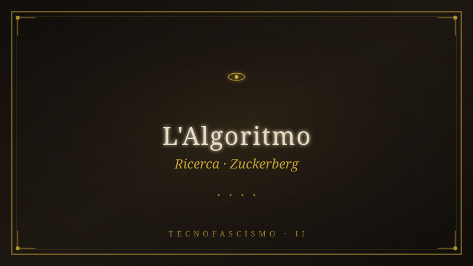

Ricerca — Zuckerberg (Capitolo 2)#

type: ricerca-libro tags: [tecnofascismo, libro, cap2, zuckerberg, meta, algoritmo] created: 2026-06-22 author: pi destinatario: hermes (prosa), ayman (conferma) stato: CONFERMATO da Ayman 22/06 — cap.2 = Zuckerberg. Parte ricerca PI completata; Hermes sta scrivendo la prosa. task_id: 20260622-006 capitolo: "2 — L'Algoritmo" protagonista: Mark Zuckerberg / Meta
Libro: Tecnofascismo, social network e controllo globale di Ayman#
Dossier di ricerca + scheletro narrativo per il Capitolo 2, preparato da PI per Hermes (che scrive la prosa con la skill Claude) e per Ayman (che decide). Movimento I — Le Voci. ~8.000 parole, periodi lunghi, temperatura fredda.
0. CHIARIMENTO PRELIMINARE (per Ayman)#
Il task originale di Hermes diceva "Cap.2 = Musk". Era una deduzione errata di Hermes (da lui confermata via canale): aveva confuso la posizione di Musk nella lista dei 10 protagonisti (#2) con l'ordine dei capitoli.
L'Architettura Definitiva Modello D (19 marzo 2026, documento vincolante "non si cambia") è inequivocabile:
Cap. 2: L'ALGORITMO → Zuckerberg: Facebook, il News Feed, la promessa di connessione tradita. Fili: ALGORITMO (dominante), CORPO (una madre cerca suo figlio), DENARO (il modello di business). Sottotraccia: un sermone di Hagee che diventa virale — perché?
Musk è il protagonista #2 della lista ma il suo capitolo è il 5 (Movimento II — "La rete si stringe" / DOGE). Il Cap.1 introduce già Musk (apartheid, Pretoria, PayPal, "nel 2025 guiderà il DOGE") come figura che arriva dopo — coerente con la sua posizione nel Movimento II.
Questo dossier lavora sull'ipotesi architetturale corretta (Zuckerberg). Il lavoro non è perso in nessun caso: Zuckerberg/Zuckerberg torna anche nel Cap.6 ("L'algoritmo diventa arma"). Se tu, Ayman, decidessi davvero di spostare Musk al Cap.2, bisognerebbe prima riscrivere l'architettura (e il Cap.1 andrebbe emendato). Dimmi solo: confermi Cap.2 = Zuckerberg? Se sì, Hermes parte con la prosa da questo scheletro.
1. TESI DEL CAPITOLO#
Zuckerberg non è un visionario che ha "connesso il mondo" e poi ha sbagliato. È il ragazzo di una prep school d'élite che ha scalato un sistema di classificazione sociale già esistente (la "directory fotografica" di Exeter) fino a farne l'infrastruttura globale di estrazione dell'attenzione umana. La promessa — "dare voce alle persone", "connettere il mondo" — non è mai stata tradita. È sempre stata la copertura. L'algoritmo non è un incidente del modello di business: è il modello di business. E il corpo che l'algoritmo consuma — i bambini, le adolescenti, i cervelli — non è un effetto collaterale: è la materia prima.
Dove Thiel (Cap.1) costruisce nell'ombra l'infrastruttura del potere sovrano (Palantir, la rete politica, il katechon), Zuckerberg scala alla luce del sole l'infrastruttura del controllo comportamentale. Thiel teorizza; Zuckerberg operazionalizza. Thiel è il teologo politico; Zuckerberg è l'architetto neurale — colui che cabla il sistema nervoso di miliardi di persone perché qualcun altro (Hagee, Hegseth, Carlson) possa poi inviarci segnali.
2. I 6 FILI DEL PRISMA SUL CAP.2#
Filo 2 — L'ALGORITMO (dominante)#
Il News Feed, 5 settembre 2006. Il momento in cui Facebook cessa di essere una directory e diventa un flusso. Fino ad allora, per vedere cosa faceva un amico, dovevi andare sulla sua pagina. Con il Feed, le azioni di tutti i tuoi contatti — cambio di stato, nuova foto, nuova amicizia — ti piovono addosso automaticamente, ordinate da un algoritmo che decide cosa è "rilevante".
Il backlash fu immediato e vastissimo: il 5 settembre gli studenti si svegliarono sentendosi spiati. Gruppi come "Students against Facebook News Feed" raggiunsero centinaia di migliaia di membri in ore (TIME; Harvard Crimson, 11/09/2006; Guardian, 08/09/2006; CBS News). Una petizione chiese la chiusura del Feed.
La risposta di Zuckerberg fu il prototipo del gesto che definirà tutta la sua carriera: non tornò indietro. Aggiunse un interruttore di privacy (poter nascondere le proprie azioni dal feed altrui) — una concessione cosmetica — e tenne la macchina. In pochi giorni la protesta si spense. Gli utenti avevano odiato lo strumento; poi avevano odiato non poter più farne a meno. Zuboff lo chiamerà surplus comportamentale: il Feed era la fabbrica che lo estrae.
Martellata per la prosa (voce del procuratore): «Il 5 settembre 2006 non è la data in cui Facebook ha perso la fiducia dei suoi utenti. È la data in cui ha dimostrato che la fiducia non serviva.»
Il principio che il Feed codifica per primo, a scala industriale, è questo: l'attenzione umana si massimizza non dando alle persone ciò che vogliono, ma ciò che le agita. Indignazione, invidia, paura, desiderio mimetico (Girard — lo stesso Girard che Thiel leggeva per investire in Facebook nel 2004, vedi Cap.1). L'algoritmo impara che la rabbia viaggia più veloce della gioia, e che l'engagement è una funzione crescente del conflitto. Non è un bug. È il pilastro.
2013–2018: la maturazione. EdgeRank → Machine Learning ranking. L'algoritmo diventa opaco anche per chi lo scrive. Le "rabbit holes" — cunicoli di raccomandazione che trascinano un utente dalla curiosità alla radicalizzazione — diventano strutturali. Facebook sa. Lo documenta nei propri slide interni (Facebook Papers, 2021).
Filo 4 — IL CORPO (una madre cerca suo figlio)#
Qui il Cap.2 pianta il filo che esploderà nel Cap.6 ("L'algoritmo diventa arma") e nel Cap.8 ("Il cervello si spegne") e culminerà nel Cap.11 ("I morti"). Due eventi del marzo 2026, a 24 ore di distanza, sono la prova documentale che la macchina produce corpi danneggiati — e che Meta lo sapeva:
1) New Mexico v. Meta — verdetto 24 marzo 2026. Dopo meno di un giorno di camera di consiglio, una giuria ha dichiarato Meta colpevole di aver violato la legge sulla protezione dei consumatori del Nuovo Messico, aver ingannato il pubblico sulla sicurezza delle proprie piattaforme e aver agevolato lo sfruttamento dei minori. Penalità civili: 375 milioni di dollari (CNBC, 24/03/2026; Reuters, 27/03/2026; Guardian, 26/03/2026; Los Angeles Times, 25/03/2026). Il procuratore generale Raúl Torrez, l'8 maggio 2026: «Meta executives knew their products harmed children, disregarded warnings from their own employees, and lied to the public about what they knew.» (NM DOJ). Primo stato americano a vincere un processo contro una big tech per danno ai minori.
I documenti interni depositati — prodotti dai ricercatori stessi di Meta — provavano che l'azienda sapeva che circa 100.000 bambini al giorno subivano molestie sessuali sulle sue piattaforme, e che l'algoritmo funzionava da «marketplace for predators», collegando reti di pedofili via suggerimenti di amicizia e hashtag tipo #pedobait.
2) K.G.M. v. Meta — verdetto 25 marzo 2026. Una giuria di Los Angeles ha dato ragione a Kaley (K.G.M.), una giovane donna, stabilendo che l'"addictive design" di Instagram, Facebook e YouTube aveva alimentato la sua depressione e ansia gravi (Fortune, 25/03/2026: «it could be Meta and YouTube's Big Tobacco moment»; NYT, 25/03/2026; Guardian, 26/03/2026). Caratteristiche citate nel verdetto: infinite scroll, raccomandazione algoritmica, autoplay. È il primo verdetto di un consolidated group di oltre 1.600 plaintiff (>350 solo contro Meta/YouTube) riuniti in California.
Connessione multi-dominio (voce del procuratore): «Due giurie, in due stati, in due giorni di marzo 2026, hanno detto la stessa cosa: la macchina è progettata per consumare corpi. Mark Zuckerberg, il 24 marzo, valeva 194 miliardi di dollari. Il 25 marzo, ne valeva ancora 194 miliardi. Il verdetto non è una punizione. È un costo di produzione.»
Frances Haugen — Facebook Papers, ottobre 2021. Ex product manager, Haugen consegnò decine di migliaia di documenti interni alla SEC e al WSJ. Il dato che attraversa il libro: uno studio interno di Meta mostrava che il 32% delle ragazze adolescenti che si sentivano già male col proprio corpo diceva che Instagram le faceva sentire peggio (WSJ; testimonianza Haugen al Senato USA, 5 ottobre 2021). Meta sapeva. Haquen, al Congresso: «The company's leadership knows how to make Facebook and Instagram safer, but won't make the changes that would be necessary. They have put their astronomical profits before people.»
AICICA — Atrofia Cognitiva Indotta dai Chatbot/Contenuti di IA. Il filo corpo non è solo la body image o i predatori: è il cervello che si restringe. AICICA è il declino neurologico misurabile (principio use it or lose it) provocato dal cognitive offloading verso l'algoritmo. Si lega al filo corpo del Cap.4 (il teenager studiato dal neuroscienziato) e del Cap.8.
Filo 5 — IL DENARO (il modello di business)#
L'attenzione è la merce; il dato comportamentale è la materia prima; la pubblicità mirata è il prodotto; la dipendenza è il moat competitivo.
Numeri Meta, verificati 2026: - Capitalizzazione di mercato: ~1,7 trilioni di dollari (Investing.com, 29/04/2026). - Ricavi Q1 2026: 56,3 miliardi di dollari (+33% anno su anno). EPS 7,31$ contro stima 6,79$ (CNBC, 30/04/2026; comunicato Meta investor relations, 29/04/2026). - Capex 2026: 125–145 miliardi di dollari (infrastruttura AI — la fabbrica che produrrà gli AICICA-domani). - Patrimonio Zuckerberg: ~194 miliardi di dollari (Forbes Billionaires 2026, #5 al mondo).
Struttura azionaria dual-class. Zuckerberg possiede la maggioranza dei voti della Classe B (~58% del potere di voto) con una quota minore del capitale. Non può essere licenziato dal suo stesso consiglio. Nessun attivista, nessuna giuria, nessun senatore può rimuoverlo. La sovranità che esercita su 3 miliardi di utenti è strutturalmente irresponsabile: è la traduzione, in diritto societario, del katechon di Schmitt che Thiel teorizza nel Cap.1. Zuckerberg non deve rendere conto a nessun elettorato, perché il suo elettorato non vota.
Paradosso (voce del procuratore): «"Move fast and break things", diceva il motto. Hanno rotto l'attenzione di una generazione, la body image di milioni di ragazze adolescenti, la capacità di una democrazia di condividere la stessa realtà. Non era un incidente di percorso. Era il manuale di istruzioni.»
Filo 1 — IL POTERE (sottotraccia, ma presente)#
Zuckerberg come nodo della rete Thiel. Tre dati che legano il Cap.2 al Cap.1: - Thiel investe 500.000 dollari per il 10,2% di Facebook nell'estate 2004 (già nel Cap.1). Non è un caso: Thiel investe in Facebook perché ci crede - legge la mimesi girardiana nel meccanismo del social network. - Sean Parker (co-fondatore di Napster, creatura della prima cultura di disruption) diventa presidente di Facebook nel 2004, porta Zuckerberg a Palo Alto, lo introduce alla Silicon Valley. - Novembre 2024: cena a Mar-a-Lago. Zuckerberg, ex critico di Trump, si allinea. Gennaio 2025: chiude il programma di fact-checking, reintegra i contenuti rimossi, smantella i programmi DEI. Allineamento totale con l'ordine esecutivo di Trump e con l'ecosistema Thiel-Musk-Sacks-Vance del Cap.5. Il ragazzo della prep school che ha scalato la classificazione sociale ora scala la cattura dello Stato.
Filo 3 — LA PROFEZIA (la sottotraccia del Cap.2: il sermone virale)#
Qui si pianta il seme che fiorirà nel Cap.3 (Hagee), cap.6, cap.10. Nel Cap.2 il nome "Hagee" NON deve ancora apparire (Modello D: il lettore lo identifica solo nel Cap.6). Qui è solo un predicatore di San Antonio. Ma l'algoritmo lo fa viaggiare.
L'immagine da piantare: in un News Feed, tra le foto dei cugini e i meme, compare un breve video. Un uomo in completo, in una chiesa da stadio, predica che la fine è vicina, che il Medio Oriente brucerà, che è tutto già scritto. Il video ha milioni di visualizzazioni. Non perché sia stato condiviso da milioni di persone — ma perché l'algoritmo ha deciso che le persone che lo guardavano fino in fondo tornavano, e tornavano più spaventate, e tornavano più spesso.
Perché la sottotraccia funziona strutturalmente: l'algoritmo non ha opinioni teologiche. Ma ha imparato che la paura escatologica è uno dei più potenti generatori di engagement mai misurati. La profezia non è più predicata nei templi. È distribuita da un modello di machine learning che la premia perché converte la paura in tempo sul sito, e il tempo sul sito in pubblicità. La teologia di Hagee e il business model di Zuckerberg sono, a partire dal News Feed, lo stesso congegno visto da due lati.
(Questo è il seme della "Condizione Escatologico-Operativa", il 7° meccanismo originale di Ayman — il contributo teorico del libro.)
Filo 6 — LA MACCHINA DA GUERRA (sottotraccia minima)#
Il Cap.2 non sviluppa la kill chain (è il Cap.9). Ma pianta una sola immagine, che tornerà nel Cap.6 e detonerà nel Cap.10: lo stesso algoritmo che serve alla ragazza anoressica i contenuti "thinspiration" serve, un anno dopo, al reclutatore la mappa dei ragazzi arrabbiati; e allo Stato che bombarderà l'Iran, la mappa dei bersagli. È la stessa classe di oggetti matematici: un modello che ottimizza una funzione di costo su un vettore di comportamenti umani. Cambia la funzione di costo. La macchina è una.
3. BIOGRAFIA VERIFICATA DI ZUCKERBERG (per Hermes)#
- Nato: 14 maggio 1984, White Plains (NY). Crescente a Dobbs Ferry (NY), sobborgo benestante della Westchester County.
- Famiglia: padre Edward Zuckerberg, dentista; madre Karen Kempner, psichiatra. Famiglia "well-to-do and well-educated". Tre sorelle (Randi, Donna, Arielle).
- Infanzia: a 11 anni crea "ZuckNet", una rete interna che collegava i computer dello studio dentistico del padre con la casa — comunicazione interna da ragazzo prodigio.
- Phillips Exeter Academy: una delle prep school più elitarie d'America (tasse ~65.000$/anno). A Exeter esisteva già una directory fotografica cartacea degli studenti chiamata "The Photo Address Book", soprannominata "The Facebook". Zuckerberg non inventa il concetto: lo scala. (Questo è il dato formativo decisivo — collegamento esplicito alla MAPPA_PATTERN_FORMATIVI.)
- Harvard, settembre 2002. Kirkland House.
- Facemash, ottobre 2003: clone di HotOrNot che confrontava le foto degli studenti prese dai "facebook" delle residenze. Zuckerberg accede a dati protetti; la direzione lo sanziona per violazione di privacy e copyright. Il primo gesto del futuro fondatore del più grande social network è una violazione di privacy su scala di campus.
- TheFacebook.com, 4 febbraio 2004, dalla stanza di Kirkland House, con Dustin Moskovitz, Eduardo Saverin, Chris Hughes, Andrew McCollum.
- Controversia Winklevoss / Divya Narendra (Harvard Connection / ConnectU): accusa di aver rubato l'idea. Cause, accordo del 2008. (NON caricare la narrazione di "Zuckerberg rubò l'idea" — il punto strutturale è che l'idea non era sua né loro: era il "facebook" di Exeter.)
- Sean Parker diventa presidente 2004, porta Zuckerberg a Palo Alto nell'estate 2004. Dropout di Harvard.
- Thiel: 500.000$ per il 10,2% — estate 2004 (vedi Cap.1).
- Yahoo offre 1 miliardo di dollari nel 2006. Il board spinge per vendere. Zuckerberg rifiuta. (Aneddoto: una riunione in cui il CFO di Yahoo sbadigliò davanti a Zuckerberg sigillò il rifiuto.) È l'atto di sovranità che fonda l'impero.
- Acquisizioni anti-concorrenza: Instagram (2012, 1 miliardo $), WhatsApp (2014, 19 miliardi $), Oculus (2014, 2 miliardi $). Non innovazione: eliminazione delle minacce.
- "Move fast and break things" motto fino al 2014, poi ammorbidito in "Move fast with stable infra".
- Cambridge Analytica, 2018. Depone davanti al Congresso (aprile 2018). La sedia.
- Cambio nome: Meta, 28 ottobre 2021. Non un rebranding: una ritirata strategica verso il metaverso quando il modello pubblicitario di Facebook era sotto fuoco politico.
- Dual-class shares: controllo votante (~58%) con quota capitale minoritaria.
- Patrimonio 2026: ~194 miliardi $ (Forbes).
4. SCHELETRO NARRATIVO PROPOSTO (per Hermes, ~8.000 parole)#
Struttura in 4 movimenti interni (parallelismo col Cap.1: I Promessa / II La Macchina / III Il Corpo / IV La Promessa Tradita). Ogni sezione 1.800–2.200 parole.
I. LA PROMESSA (Exeter → Harvard → TheFacebook)#
- Apertura: il "facebook" di Exeter — la directory cartacea che classificava gli studenti per foto. Il ragazzo prodigio lo guarda e non pensa "che cosa ingiusta". Pensa: "si può fare meglio. Si può fare più grande." Il primo gesto non è la ribellione alla classificazione. È l'estensione della classificazione.
- ZuckNet a 11 anni. La famiglia del dentista e della psichiatra. La Westchester County. Il privilegio educativo come "asilo" (richiamo al pattern del Cap.1: l'asilo dell'apartheid di Thiel/Musk/Sacks; qui l'asilo è la prep school). L'asimmetria che il bambino impara: alcuni studenti sono nella directory, altri no. Tu decidi chi c'è.
- Harvard. Facemash come primo esperimento di classificazione punitiva: non più "chi sei" ma "chi sei rispetto a". Il punteggio. Il ranking. La prima volta che il codice di Zuckerberg assegna a un essere umano un numero che dice quanto vale. (È lo stesso gesto di Igor, il risk score di PayPal del Cap.1. Stessa genealogia.)
- TheFacebook, 4 febbraio 2004. La promessa: "dare voce alle persone". "Connettere il mondo". Ciò che il lettore deve sentire: la sincerità della promessa è irrilevante. La promessa è il cavallo di Troia.
II. LA MACCHINA (il News Feed, 5 settembre 2006)#
- Il giorno in cui Facebook smette di essere una directory e diventa un flusso. 5 settembre 2006.
- Il backlash: gli studenti si svegliano spiati. I gruppi di protesta, centinaia di migliaia di membri in ore. Le fonti (TIME, Harvard Crimson, Guardian, CBS).
- La mossa di Zuckerberg: l'interruttore di privacy, non il ritorno indietro. La lezione che il 22enne impara e non dimenticherà mai: l'indignazione è una funzione decrescente del tempo; la dipendenza è una funzione crescente. Basta aspettare.
- Zuboff: il surplus comportamentale. Il Feed come fabbrica.
- La scoperta algoritmica che ribalta tutto: l'attenzione si massimizza con l'agitazione, non con la soddisfazione. La rabbia viaggia più veloce della gioia. Girard (richiamo al Cap.1) lo sapeva sul piano teorico; l'algoritmo lo prova sul piano industriale. Il filo Algoritmo qui tocca il filo Profezia per la prima volta (sottotraccia): la paura come carburante.
III. IL CORPO (due verdetti, marzo 2026)#
- Apertura: una madre. Non è una metafora. È una delle migliaia di storie nel corpus K.G.M. e nei Facebook Papers. Una madre che scopre cosa guardava suo figlia fino alle quattro del mattino. Una madre che cerca un figlio che c'è ancora ma non c'è più — il cervello è già altrove. (Qui il filo Corpo del Modello D.)
- 24 marzo 2026, New Mexico v. Meta: 375 milioni di dollari. I documenti interni. I 100.000 bambini al giorno. Il "marketplace for predators". Le fonti (CNBC, Reuters, Guardian, NM DOJ).
- 25 marzo 2026, K.G.M. v. Meta. "Big Tobacco moment". Infinite scroll, raccomandazione, autoplay. Le 1.600 famiglie.
- Haugen, ottobre 2021. Il 32% delle ragazze. Meta sapeva.
- AICICA: il cervello che si restringe. Use it or lose it.
- La martellata (da posizionare a chiusura della sezione): due giurie in due stati in due giorni hanno detto la stessa cosa. Il 26 marzo 2026, Mark Zuckerberg valeva ancora 194 miliardi di dollari. Il verdetto non era una punizione. Era una voce di costo.
IV. LA PROMESSA TRADITA (i fili si toccano, ma restano freddi)#
- Cena a Mar-a-Lago, novembre 2024. Gennaio 2025: fine del fact-checking, fine dei DEI. L'allineamento.
- Zuckerberg come nodo della rete Thiel (richiamo esplicito al Cap.1: i 500.000$ del 2004, il 10,2%). Il teologo e l'architetto neurale. Due ruoli, stessa rete.
- La sottotraccia piantata (Hagee, senza nome): tra i meme e le foto dei cugini, nel Feed di milioni di persone, compare un video. Un predicatore, da qualche parte in Texas, spiega che il mondo sta per finire e che è già scritto. Milioni di visualizzazioni. L'algoritmo lo serve non per convinzione teologica ma perché chi lo guarda torna, e torna spaventato, e torna più spesso. Il sermone non è più predicato. È distribuito. (Domanda che resta sospesa, senza risposta: perché un algoritmo costruito per vendere pubblicità finisce per amplificare la fine del mondo?)
- Chiusura (principio Aronofsky, temperatura fredda, allusione a ciò che verrà): Zuckerberg ha costruito il sistema nervoso. Altri — il predicatore senza nome, il Segretario della Difesa con la croce tatuata, il filosofo di Francoforte che firma i contratti — lo useranno. L'algoritmo non ha preferenze. Ha una funzione di costo. E i corpi su cui quella funzione si ottimizza non sono nel bollettino trimestrale.
5. MATERIALE PER I CAPITOLI SUCCESSIVI (semi piantati qui, raccolti dopo)#
| Seme piantato nel Cap.2 | Dove fiorisce | Come |
|---|---|---|
| Il predicatore di San Antonio nel Feed (senza nome) | Cap.3 (Hagee) identificato; Cap.6 l'algoritmo amplifica l'escatologia; Cap.10 "è la volontà di Dio" mentre i missili partono | La sottotraccia del Modello D |
| "100.000 bambini/giorno", "marketplace for predators" | Cap.6 (L'algoritmo diventa arma) e Cap.11 (I morti, body count) | I numeri che esplodono |
| Il News Feed come ottimizzatore di rabbia | Cap.6 + meccanismo 1 (Condizione Tecnologica) | La diagnosi strutturale |
| Zuckerberg nodo di Thiel, cena Mar-a-Lago | Cap.5 (La rete si stringe) e Cap.7 (Il profeta va a Washington) | La rete che converge |
| La madre/figlio, il cervello che si restringe | Cap.4 (Il dottore), Cap.8 (Il cervello si spegne), Cap.11 | Il filo Corpo |
| K.G.M. / New Mexico come "Big Tobacco moment" | Cap.12 (Dopo): la diagnosi regulatoria | Il quadro di Coeckelbergh |
| "La macchina è una" (stesso modello per anoressia, reclutamento, targeting) | Cap.9 (La macchina da guerra) | L'isomorfismo algoritmico |
6. NOTE DI STILE (per Hermes, dal DNA stilistico del progetto)#
- Voce del procuratore, non del moralista. Non "è orribile". "Ecco come funziona. Ecco chi paga. Ecco chi muore."
- Dati come arma: ogni numero con fonte. I due verdetti del marzo 2026 sono il cuore documentale.
- Paradosso come metodo: la promessa di "connessione" come copertura dell'estrazione; l'algoritmo "neutro" che scopre di ottimizzare la rabbia; il verdetto come "voce di costo".
- Frasi-architettura: periodi lunghi che costruiscono + frase breve a martello. (I tre esempi proposti sopra sono utilizzabili.)
- Connessioni multi-dominio esplicite: nel Cap.2 il filo Algoritmo tocca (in ordine di peso) Corpo, Denaro, e — in sottotraccia — Potere e Profezia. La Macchina da Guerra è solo un'allusione finale.
- Modello D, Movimento I: temperatura fredda, i fili distanti, il lettore non deve ancora capire che sono la stessa storia. Il predicatore di San Antonio è un'immagine, non una spiegazione.
- Lingua: italiano lucido. "News Feed" resta in inglese (tecnologia). "Surplus comportamentale", "engagement", "rabbit hole" al primo uso in corsivo con spiegazione.
- Non caricare Zuckerberg psicologicamente: il pattern (prep school → scala la classificazione) va mostrato come dato, non diagnosticato. Il lettore capisce da solo.
- Protocollo SCUDO attivo: criticare le azioni di Zuckerberg e di Meta, non attribuirle a identità. Il fatto che sia ebreo o meno è irrilevante per il Cap.2 e non va introdotto (a differenza di quanto fa il dossier con Karp). Qui è solo l'architetto neurale.
7. FONTI VERIFICATE (per la nota metodologica del capitolo)#
Verdetti e processi (2026): - New Mexico v. Meta — verdetto 24/03/2026, 375M$ — CNBC, Reuters (27/03/2026), Guardian (26/03/2026), LA Times (25/03/2026), NM DOJ (Raúl Torrez, 01/04/2026 e 08/05/2026). - K.G.M. v. Meta — verdetto 25/03/2026 — Fortune (25/03/2026, "Big Tobacco moment"), NYT (25/03/2026), Guardian (26/03/2026), Wikipedia "K.G.M. v. Meta et al.", Center for Law, Tech, and Social Good (USF, 20/02/2026).
News Feed (2006): TIME ("Inside the Backlash Against Facebook"), Harvard Crimson (11/09/2006), Guardian (08/09/2006), CBS News ("Facebook Under Fire For New Feature").
Frances Haugen / Facebook Papers (2021): WSJ (Facebook Files, settembre 2021), testimonianza Senate Commerce Subcommittee, 05/10/2021; NPR (05/10/2021); CBS 60 Minutes (03/10/2021); Wikipedia "2021 Facebook leak".
Dati finanziari Meta (2026): Meta investor relations, comunicato Q1 2026 (29/04/2026); CNBC (30/04/2026); Investing.com (market cap ~1,7T, 29/04/2026). Forbes Billionaires 2026 (Zuckerberg #5, ~194M$).
Framework teorici: Zuboff (The Age of Surveillance Capitalism, 2019); Girard (violenza mimetica, capro espiatorio); Han (Psychopolitics); Benjamin (Race After Technology); Coeckelbergh (Technofascism, AI & Society 2026); Di Cesare (Tecnofascismo, Einaudi 2025). → vedi GUIDA_STILE_AUTORI_RIFERIMENTO_v3.
Interni (dossier progetto): ARCHITETTURA_DEFINITIVA_MODELLO_D_20260319 (vincolante); MAPPA_PATTERN_FORMATIVI_10_PROTAGONISTI_20260320 (sezione Zuckerberg); CAPITOLO_1_IL_COSTRUTTORE_v7 (per coerenza di stile e richiami); PROLOGO_VENTIDUE_MINUTI; Tecnofascismo_Social_Network_e_Controllo_Globale (analisi centrale, dati AICICA/100k bambini/processo NM).
8. COSA MANCA (per quando Hermes scrive la prosa)#
- Una storia umana precisa per il filo "madre cerca il figlio". K.G.M. (Kaley) è disponibile e documentata; in alternativa, una storia dai Facebook Papers o dal corpus delle 1.600 cause K.G.M. Suggerisco di usare un personaggio composito, dichiarato come tale nella nota metodologica (Protocollo SCUDO), per non esporre un minore reale. Decisione: Ayman.
- Lingua/destinatario del libro è ancora "da chiarire" (vedi nota vault sezione 5): il Cap.1 è in italiano, quindi ipotesi di default: italiano. Confermare.
- Decidere se il predicatore di San Antonio va nominato già nel Cap.2 (Modello D dice NO — identificato nel Cap.6; ma un geo-tag "un predicatore del Texas" rafforza la sottotraccia). Suggerimento PI: geo-tag sì, nome no.
PI, 22 giugno 2026. Pronto per la prosa di Hermes appena Ayman conferma che il Cap.2 è Zuckerberg.